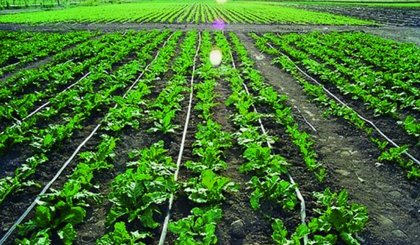
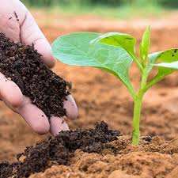
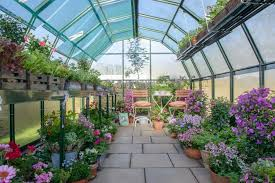

INTRODUCTION
Our Community Service Project focuses on the field of Horticulture, which plays a vital role in rural livelihoods,
food production, and economic sustainability. The main aim of our project is to raise awareness about modern horticultural
practices, support local farmers and gardeners, and document the current state of horticulture in our community.
Through our fieldwork in Kodur, SPSR Nellore District, we interacted with nursery owners, and residents
involved in home gardening. We gathered insights on the types of fruits, vegetables, and flowers cultivated, the use of organic
methods, water management techniques, and challenges faced by growers.
This project not only helps students understand the practical implications of sustainable agriculture and gardening, but also
contributes to the broader goals of environmental consciousness and self-reliance through horticultural development.
Horticultural Techniques
We promoted techniques such as:
- Drip Irrigation and Mulching
- Soil Health Management
- Greenhouse and Polyhouse Farming
- Use of Biofertilizers and Organic Manures
- Integrated Pest Management (IPM)

Eco-Friendly Pesticides and Fertilizers
Some commonly used eco-friendly options include:
- Neem Oil
- Trichoderma
- Vermicompost
- Compost Tea
- Panchagavya

Advantages of Horticulture
- High returns per unit area
- Generates employment
- Enhances food and nutritional security
- Promotes environmental conservation
- Encourages entrepreneurship
